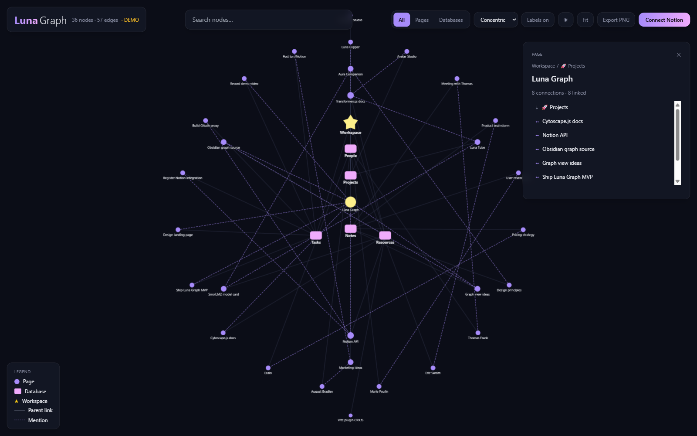
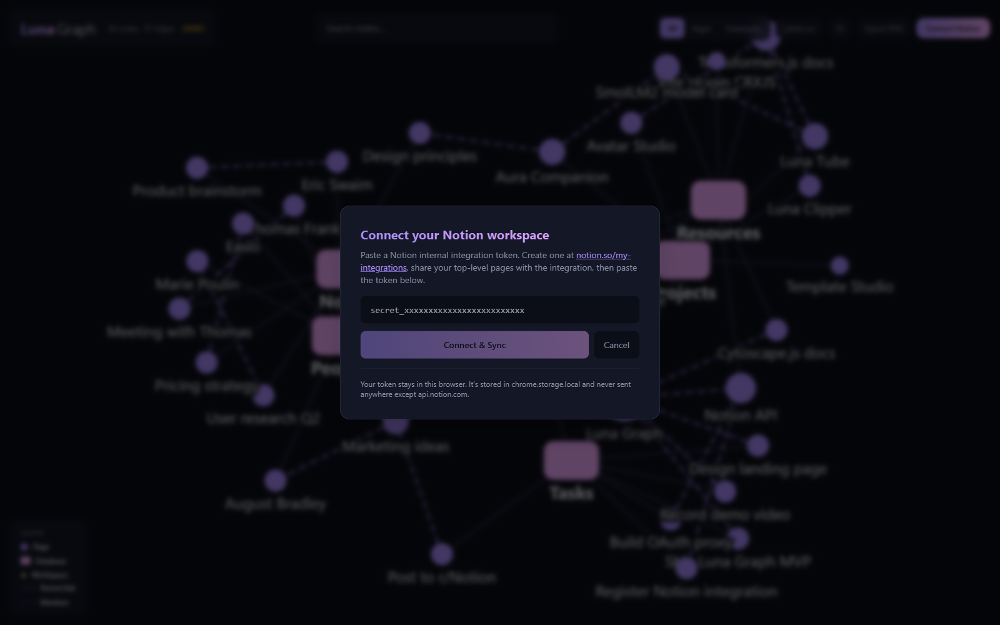
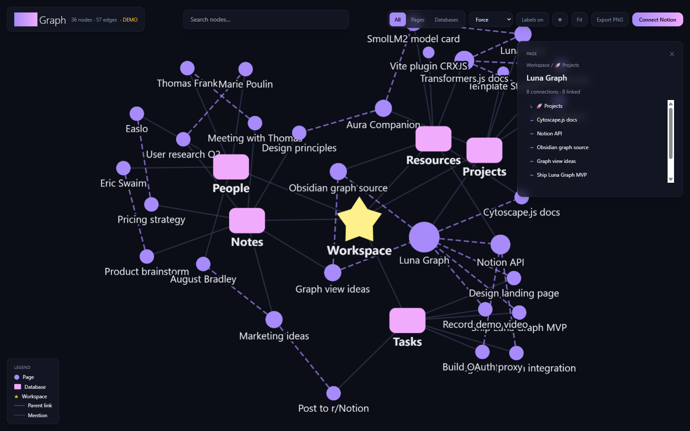

Luna Notion Graph visualizes every page, every database, every link in your Notion workspace as a force-directed graph. AI semantic search zooms the graph to what matters.
All AI runs in your browser. Your Notion content never leaves your device. No API keys. No subscription. One dollar — lifetime.




No. Everything runs locally in your browser. Luna Graph calls Notion's API directly from your browser using your own Notion auth, then renders the graph + embeddings in-browser. No Luna server, no OpenAI, no cloud AI.
No. The extension uses Notion's web session. Just paste your workspace URL.
Chrome 113+, Edge 113+, or any Chromium-based browser with WebGPU enabled. Firefox/Safari support is coming.
Yes. $1 license covers personal use across all your own devices.
30-day money back, no questions asked. Email thecodebe@gmail.com.
73 WordPress plugins with the same local-AI philosophy ($39 Starter, $399 Lifetime). See lunasuite.app.